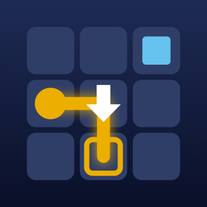

Privacy Policy
Effective date: 1 November 2026 · Developer: Selin Kaplan · Contact: kaplanselinn@gmail.com
English
Summary
Signal Sort has no account, no login and no server of its own. Your progress stays on your device. The free version shows ads from Google AdMob, which may collect data as described below.
Data stored on your device
Level progress, stars, daily puzzle results, hint balance, settings and a record of completed purchases are stored only on your device. They are not sent to us and are deleted when you delete the app.
Purchases
In-app purchases are processed by Apple. We do not receive your name, Apple Account or payment details; the app only checks with Apple which items you own.
Advertising (Google AdMob)
The free version shows ads served by Google AdMob (Google LLC, and Google Ireland Limited in the EEA). To show and measure ads, prevent fraud and limit how often you see an ad, Google may collect: device identifiers (the advertising identifier only if you allow tracking), IP address and approximate location derived from it, device and app information, and how you interact with ads. Google's use of this data is described at How Google uses information from sites or apps that use its services and in the Google Privacy Policy.
Before any ads are requested, you are asked for consent where the law requires it (for example in the EEA, UK and Switzerland) using Google's consent form, and iOS asks whether the app may track you. If you decline, you will only see non-personalized or limited ads and the game works the same. You can change your choice any time in Settings → Privacy options and in iOS Settings → Privacy & Security → Tracking.
No ads are shown during the first session or the tutorial. Buying “Remove Ads” or the “Full Game” turns off ads between levels; optional rewarded ads (for a free hint) stay available only if you choose to watch them.
Analytics and crash reports
We do not use analytics SDKs. If you have chosen to share data with app developers in iOS, Apple may provide us anonymous, aggregated usage statistics and crash reports.
Children
Signal Sort is a general-audience game and is not directed to children under 13. Ads are limited to content suitable for general audiences.
Your rights and contact
Because we do not hold personal data about you, most requests can be handled on your device (deleting the app deletes your data; consent can be changed in Settings). For questions about Google's data, use Google's tools linked above. For anything else, contact kaplanselinn@gmail.com.
Changes
If this policy changes, the updated version will be published on this page with a new effective date.
Türkçe
Özet
Signal Sort'ta hesap, giriş ya da bize ait bir sunucu yoktur. İlerlemen cihazında kalır. Ücretsiz sürüm Google AdMob reklamları gösterir; AdMob aşağıda anlatıldığı gibi veri toplayabilir.
Cihazında saklanan veriler
Seviye ilerlemesi, yıldızlar, günlük bulmaca sonuçları, ipucu bakiyesi, ayarlar ve tamamlanan satın alımların kaydı yalnızca cihazında saklanır. Bize gönderilmez ve uygulamayı sildiğinde silinir.
Satın alımlar
Uygulama içi satın alımları Apple işler. Adını, Apple Hesabını ya da ödeme bilgilerini almayız; uygulama yalnızca hangi ürünlere sahip olduğunu Apple'dan doğrular.
Reklamlar (Google AdMob)
Ücretsiz sürüm Google AdMob (Google LLC; AEA'da Google Ireland Limited) reklamları gösterir. Reklamları göstermek ve ölçmek, sahtekârlığı önlemek ve bir reklamı kaç kez gördüğünü sınırlamak için Google şunları toplayabilir: cihaz tanımlayıcıları (reklam tanımlayıcısı yalnızca izlemeye izin verirsen), IP adresi ve buna dayalı yaklaşık konum, cihaz ve uygulama bilgileri ve reklamlarla etkileşimin. Google'ın bu verileri nasıl kullandığı Google'ın hizmetlerini kullanan site ve uygulamalardan gelen bilgileri nasıl kullandığı sayfasında ve Google Gizlilik Politikası'nda açıklanır.
Herhangi bir reklam istenmeden önce, yasanın gerektirdiği yerlerde (ör. AEA, Birleşik Krallık, İsviçre) Google'ın onay formuyla iznin istenir ve iOS uygulamanın seni izleyip izleyemeyeceğini sorar. Reddedersen yalnızca kişiselleştirilmemiş veya sınırlı reklamlar görürsün; oyun aynı şekilde çalışır. Seçimini istediğin zaman Ayarlar → Gizlilik seçenekleri'nden ve iOS Ayarlar → Gizlilik ve Güvenlik → İzleme bölümünden değiştirebilirsin.
İlk oturumda ve tutorial sırasında reklam gösterilmez. "Reklamları Kaldır" ya da "Tam Oyun" satın alınca seviyeler arası reklamlar kapanır; isteğe bağlı ödüllü reklamlar (ücretsiz ipucu için) yalnızca sen izlemeyi seçersen gösterilir.
Analiz ve çökme raporları
Analiz SDK'sı kullanmıyoruz. iOS'ta geliştiricilerle veri paylaşmayı seçtiysen Apple bize anonim, toplu kullanım istatistikleri ve çökme raporları sağlayabilir.
Çocuklar
Signal Sort genel kitleye yönelik bir oyundur ve 13 yaş altındaki çocuklara yönelik değildir. Reklamlar genel kitleye uygun içerikle sınırlandırılmıştır.
Hakların ve iletişim
Hakkında kişisel veri tutmadığımız için taleplerin çoğu cihazında karşılanabilir (uygulamayı silmek verilerini siler; onay Ayarlar'dan değiştirilir). Google'ın verileriyle ilgili sorular için yukarıdaki Google bağlantılarını kullan. Diğer her şey için: kaplanselinn@gmail.com.
Değişiklikler
Bu politika değişirse güncel sürüm yeni yürürlük tarihiyle bu sayfada yayımlanır.
Español
Resumen
Signal Sort no tiene cuenta, inicio de sesión ni servidor propio. Tu progreso se queda en tu dispositivo. La versión gratuita muestra anuncios de Google AdMob, que puede recopilar datos como se describe a continuación.
Datos guardados en tu dispositivo
El progreso de niveles, las estrellas, los resultados del reto diario, el saldo de pistas, los ajustes y el registro de compras se guardan solo en tu dispositivo. No se nos envían y se eliminan al borrar la app.
Compras
Apple procesa las compras dentro de la app. No recibimos tu nombre, tu cuenta de Apple ni tus datos de pago; la app solo comprueba con Apple qué artículos tienes.
Publicidad (Google AdMob)
La versión gratuita muestra anuncios de Google AdMob (Google LLC y, en el EEE, Google Ireland Limited). Para mostrar y medir anuncios, evitar fraudes y limitar cuántas veces ves un anuncio, Google puede recopilar: identificadores del dispositivo (el identificador de publicidad solo si permites el seguimiento), la dirección IP y la ubicación aproximada derivada de ella, información del dispositivo y de la app, y cómo interactúas con los anuncios. El uso que hace Google de estos datos se describe en Cómo utiliza Google la información de sitios o aplicaciones que utilizan sus servicios y en la Política de privacidad de Google.
Antes de solicitar anuncios se te pide consentimiento donde la ley lo exige (por ejemplo, en el EEE, el Reino Unido y Suiza) con el formulario de Google, e iOS te pregunta si la app puede rastrearte. Si lo rechazas, solo verás anuncios no personalizados o limitados y el juego funciona igual. Puedes cambiar tu elección en Ajustes → Opciones de privacidad y en Ajustes de iOS → Privacidad y seguridad → Rastreo.
No se muestran anuncios en la primera sesión ni en el tutorial. Al comprar «Quitar anuncios» o el «Juego completo» desaparecen los anuncios entre niveles; los anuncios con recompensa (para una pista gratis) solo aparecen si decides verlos.
Análisis e informes de fallos
No usamos SDK de análisis. Si en iOS elegiste compartir datos con los desarrolladores, Apple puede facilitarnos estadísticas de uso anónimas y agregadas e informes de fallos.
Menores
Signal Sort es un juego para todos los públicos y no está dirigido a menores de 13 años. Los anuncios se limitan a contenido apto para todos los públicos.
Tus derechos y contacto
Como no guardamos datos personales sobre ti, la mayoría de solicitudes se resuelven en tu dispositivo (borrar la app borra tus datos; el consentimiento se cambia en Ajustes). Para dudas sobre los datos de Google, usa los enlaces de Google anteriores. Para todo lo demás: kaplanselinn@gmail.com.
Cambios
Si esta política cambia, la versión actualizada se publicará en esta página con una nueva fecha de entrada en vigor.